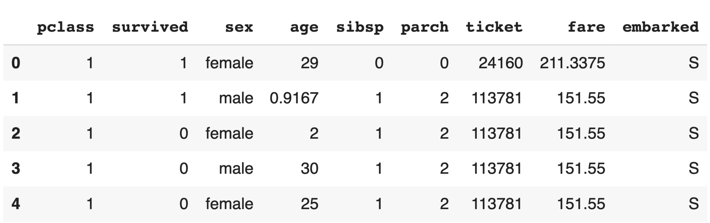
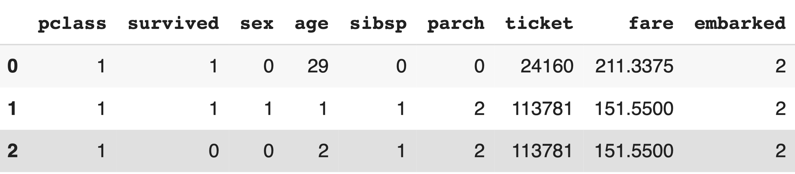

- name: Name will not aid in or prediction algorithms
- home.dest: Their ultimate destination will not determine their survival either
- body: This feature had many missing data points and was unclear as to its use.
- cabin: This feature was unclear, and was unable to be used as a result
- boat: Once they have survived, which boat they got onto to survive was irrelevant
New Data With Removed Features

Cleaned Data

To clean the Data:
- Change 'sex' and 'embarked' to numeric values
- Change age to an int
- Made sure all values were numeric